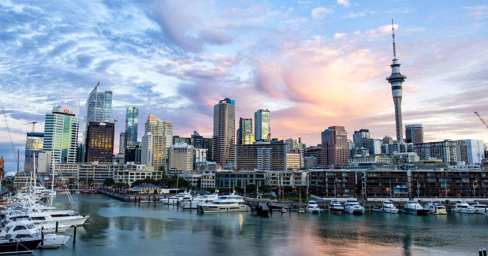
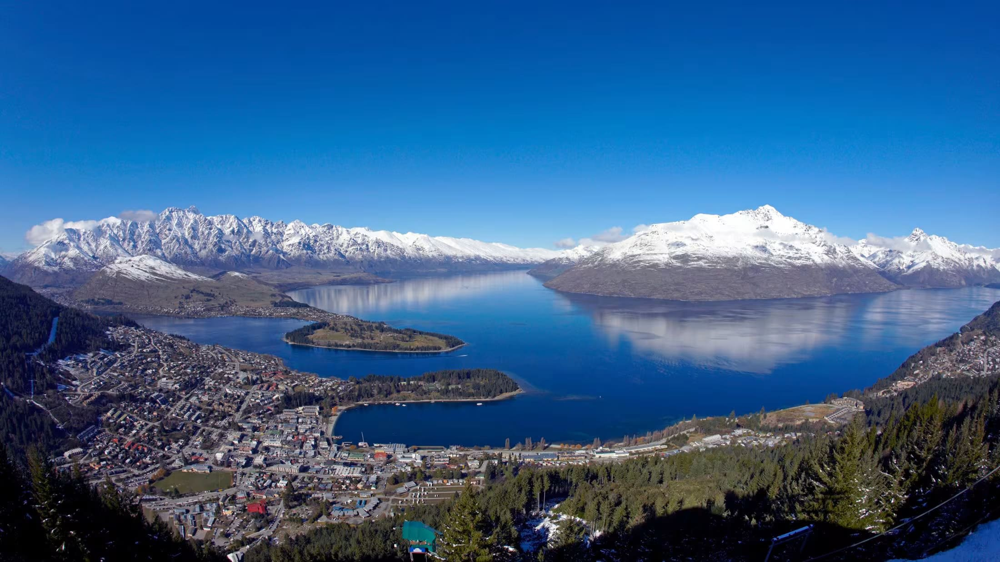
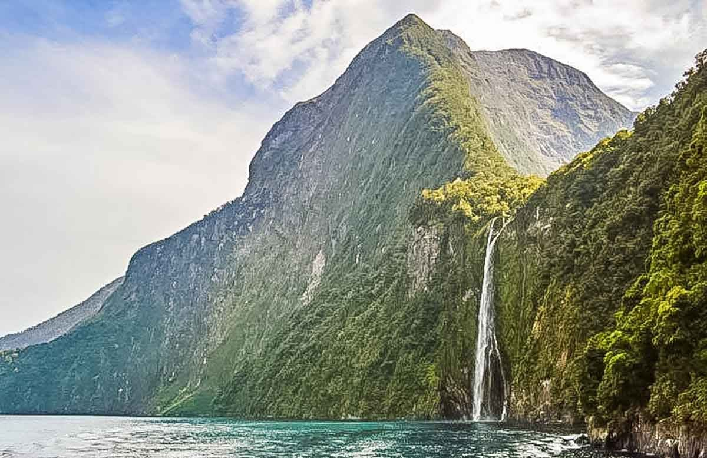
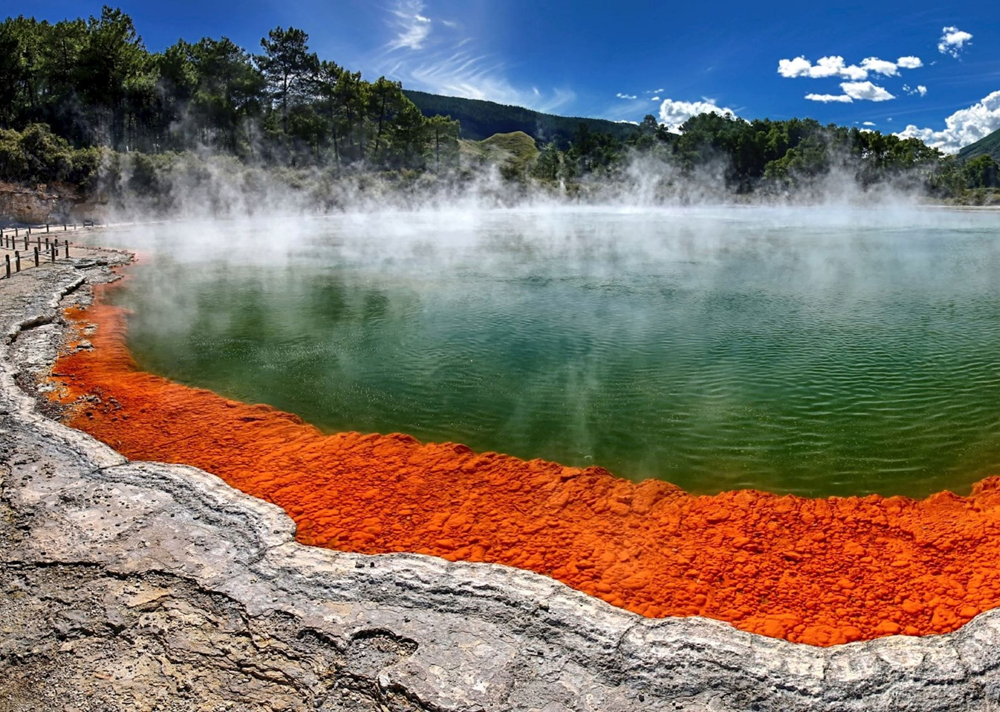

New Zealand - Land of Stunning Landscapes and Adventure

Introduction
New Zealand is renowned for its breathtaking natural scenery, adventure tourism, and rich Maori culture. From snow-capped mountains to serene lakes, it offers diverse experiences for all travelers.
Visitors can explore the North Island’s geothermal wonders, vibrant cities, and cultural heritage, or the South Island’s fjords, mountains, and outdoor adventures. New Zealand is a paradise for nature lovers and thrill-seekers alike.
Quick Facts
- Capital: Wellington
- Population: Approximately 5.1 million
- Language: English, MÄori
- Currency: New Zealand Dollar (NZD)
- Best Time to Visit: November to April (spring & summer)
Explore Major Destinations
Jump to a specific destination
\r\n
Auckland

Region: North Island
Auckland is New Zealand’s largest city, known as the “City of Sails” due to its harbors and boating culture. It offers a mix of urban sophistication and natural beauty.
Visit the Sky Tower, explore the vibrant Viaduct Harbour, and enjoy nearby beaches and islands. Auckland is a gateway to cultural experiences, shopping, and outdoor adventures.
Must-See Attractions
- Sky Tower - Iconic observation tower with panoramic city views
- Viaduct Harbour - Restaurants, nightlife, and waterfront promenade
- Waiheke Island - Vineyards and beautiful beaches
- Auckland War Memorial Museum - Maori culture and natural history
- Mount Eden - Volcanic peak with city panorama
Back to top
Queenstown

Region: South Island
Queenstown is New Zealand’s adventure capital, famous for outdoor activities like bungee jumping, skiing, and jet boating. It sits on the shores of Lake Wakatipu, surrounded by the Remarkables mountain range.
Explore local wineries, take scenic cruises, or enjoy hiking and skiing. Queenstown combines thrill-seeker experiences with stunning natural scenery.
Must-See Attractions
- Lake Wakatipu - Scenic lake with boating and hiking opportunities
- Skyline Queenstown - Gondola ride and panoramic views
- Shotover River - Adventure sports like jet boating
- The Remarkables - Mountain range with skiing and hiking
- Queenstown Gardens - Relaxing gardens and lakeside walks
Back to top
Milford Sound

Region: South Island
Milford Sound is a breathtaking fjord in Fiordland National Park, famous for dramatic cliffs, waterfalls, and pristine waters. It is often called the “Eighth Wonder of the World”.
Take a boat cruise, kayak, or scenic flight to admire the majestic peaks and cascading waterfalls. Milford Sound is a must-visit natural wonder for photographers and nature lovers.
Must-See Attractions
- Mitre Peak - Iconic mountain rising from the fjord
- Bowen Falls - Stunning waterfall cascading into the Sound
- Fiordland National Park - Scenic hikes and wildlife
- Kayaking and Boat Tours - Explore fjords up close
- Seal and Dolphin Watching - Local marine wildlife encounters
Back to top
Rotorua

Region: North Island
Rotorua is known for its geothermal activity, hot springs, and rich Maori culture. Visitors can witness geysers, mud pools, and cultural performances.
Explore Whakarewarewa Thermal Village, relax in hot springs, and experience traditional Maori feasts and performances. Rotorua is a hub for culture and nature combined.
Must-See Attractions
- Whakarewarewa Thermal Village - Geothermal activity and Maori culture
- Polynesian Spa - Relaxing mineral hot springs
- Redwoods Treewalk - Elevated walkway through giant trees
- Agrodome - Farming shows and sheep demonstrations
- Government Gardens - Historic gardens and museums
Back to top
Travel Tips for New Zealand
Here are some essential tips for traveling in New Zealand.
- Transport: Renting a car is recommended for flexibility; domestic flights connect major regions.
- Currency: New Zealand Dollar (NZD); widely accepted, credit cards are common.
- Weather: Variable climate; pack layers for changing conditions.
- Adventure: Many activities outdoors; follow safety guidelines and check conditions.
- Culture: Respect Maori heritage sites and follow local etiquette.
← Back to Oceania Home